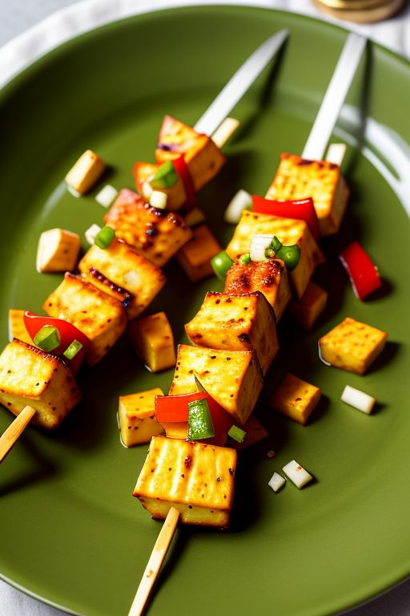

Paneer Tikka

What is Paneer Tikka?
Veg Paneer Tikka is a tantalizing Indian appetizer that combines succulent cubes of paneer (cottage cheese) and vibrant, marinated vegetables. The dish is a delightful fusion of flavors, with the creamy paneer absorbing the rich spices of the marinade. These skewered delights are grilled to perfection, resulting in a smoky, charred exterior and a tender, mouthwatering interior. Each bite bursts with the zesty tang of yogurt, the warmth of aromatic spices, and the freshness of bell peppers and onions. Veg Paneer Tikka is a vegetarian favorite that delivers a burst of Indian flavors in every savory bite, making it a perfect starter for any meal or a great addition to your next barbecue or gathering.
Ingredients
- 200 grams Paneer (cottage cheese) cut into cubes
- 1/2 cup thick yogurt
- 2 tablespoon besan (gram flour)
- 1 tablespoon ginger-garlic paste
- 1 tablespoon red chilli powder
- 1/2 teaspoon turmeric powder
- 1 tablespoon garam masala
- 1 tablespoon coriander powder
- 1 tablespoon cumin powder
- Salt to taste
- 2 tablespoon vegetable oil
- 1 tablespoon lemon juice
- 1 bell peper cut to chunks
- 1 onion cut to chunks
- Skewers for grilling
- Fresh coriander leaves for garnish
- Lemon wedges for serving
Steps to Cook
- In a mixing bowl, combine yogurt, besan, ginger-garlic paste, red chili powder, turmeric powder, garam masala, coriander powder, cumin powder, salt, vegetable oil, and lemon juice to make the marinade.
- Add the paneer cubes, bell pepper, and onion chunks to the marinade. Make sure they are well-coated. Marinate for at least 1 hour in the refrigerator.
- Preheat your grill or oven to 200°C (392°F). If using wooden skewers, soak them in water for 30 minutes to prevent them from burning.
- Thread the marinated paneer, bell pepper, and onion onto the skewers, alternating the vegetables and paneer.Place the skewers on the grill or in the oven and cook for about 15-20 minutes, turning them occasionally until they are charred and cooked through.
- Garnish with fresh coriander leaves and serve hot with lemon wedges.